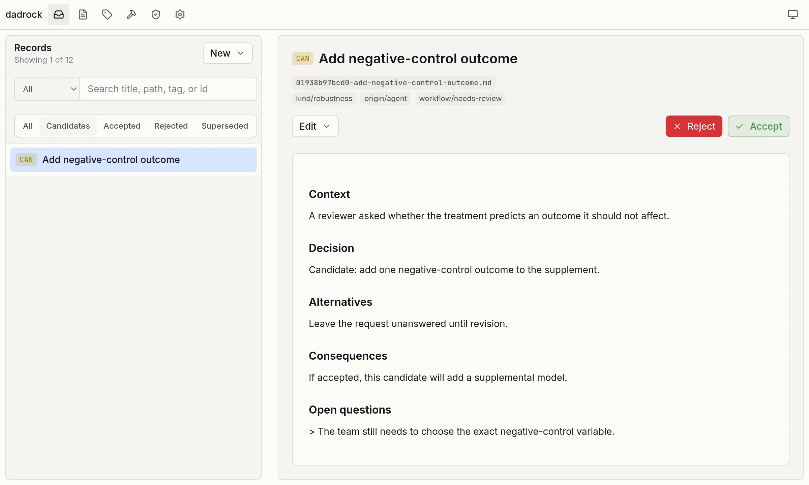

DADR
Record human decisions in a simple file format.
Implement the data analysis using any tools you like.
Assess conformity of the code with decisions automatically.
Problem 1: Opacity¶
Every data analysis rests on dozens of choices: which observations to include, how to code key variables, which model to fit, how to quantify uncertainty. These choices matter: Many Analysts studies show that independent teams given the same data and hypotheses routinely reach different results.1
Most of these choices never appear in a methods section, and reconstructing them from code and data after the fact is an archeology project.
A simple way to record what was decided, why, what alternatives were considered, and what the consequences are.
Problem 2: Drift¶
On long projects, analysts lose track of key decisions and the reasons behind them. The code drifts from the original intent, and minor-looking choices can change how results are interpreted. The risk grows when analysis is delegated to coding agents, which produce a lot of hard-to-review code.
A human-approved, auditable, and authoritative record of the key decisions made in a project.
Solution: Data Analysis Decision Records¶
Data Analysis Decision Records (DADR) are designed to make our key analytical choices explicit. Each decision becomes a short Markdown record, stored alongside the code, data, and prose of a project. The DADR markdown files are human-editable, LLM-readable, and version-controllable. They include meta-data fields and tags that enable external tools to track decision flows, audit the faithfulness of a codebase to recorded decisions, and generate reports and narratives directly from the decision ledger.
DADR is not meant to be a comprehensive record of every thought, but rather a focused ledger of the key decisions that shape an analysis. It is a simple specification inspired by the Architecture Decision Record, a proven and popular development practice in the software engineering community.
Every candidate decision must be approved by the human analyst before it enters the permanent record.

New possibilities¶
A complete, structured trace of analytic decisions is more than documentation. It is an asset that downstream tools and humans can act on.
Faithfulness¶
Compare code, plan, and manuscript against recorded decisions to flag drift, undocumented choices, or contradictions. An LLM walks the relevant code paths and produces a discrepancy report for human triage.
Compliance¶
Cross-check decisions against a Statistical Analysis Plan (SAP), a Pre-Analysis Plan (PAP), Pre-registration, or data cleaning plan to surface deviations and unexecuted commitments.
Multiverse and robustness¶
Automatically surface the choices that need to be subjected to sensitivity, robustness, or multiverse analysis.
Decision flow¶
Follow how analytic choices evolved: which decisions replaced which, when, and why.
Drafting¶
Generate methods sections, appendices, and decision tables directly from the trace, with citations back to the records.
Onboarding¶
Hand a collaborator or new contributor a readable narrative instead of a code-archaeology assignment.
Replication and reuse¶
Give independent analysts a self-contained rationale for every consequential choice.
Coverage and audit¶
Report which analysis activities are backed by decisions, which are unreviewed, and which have gone stale.
Teaching¶
Use real annotated analyses to show how defensible alternatives were considered and chosen.
Example¶
---
title: Drop observations with missing treatment assignment
status: accepted
id: 01938c20-a3b4-7000-8000-111122223333
tags:
- kind/sample
- confidence/high
---
## Context
The randomization log is missing the treatment field for 47 of 8,213
respondents. Without an assignment we cannot estimate either
intent-to-treat or per-protocol effects for those rows. This extends
the sampling rule established in [[01938b8e4d70]].
## Decision
> #axis/sample/complete-case
> Drop the 47 respondents without recorded treatment assignment from
> the analysis sample.
## Alternatives
- Multiple imputation of the assignment indicator (rejected: assignment
is a treatment, not a covariate; imputing it would invent
counterfactual exposures).
- Coding the missing rows as control (rejected: silently biases the ITT
estimate toward the null).
## Consequences
The analysis sample drops from 8,213 to 8,166. Power calculations need
to be re-run; see [[01938c30b1e2]].
-
Many Analysts studies:
- Silberzahn et al. (2018), "Many Analysts, One Data Set: Making Transparent How Variations in Analytic Choices Affect Results," Advances in Methods and Practices in Psychological Science 1(3): 337–356, doi:10.1177/2515245917747646.
- Botvinik-Nezer et al. (2020), "Variability in the Analysis of a Single Neuroimaging Dataset by Many Teams," Nature 582: 84–88, doi:10.1038/s41586-020-2314-9.
- Huntington-Klein et al. (2021), "The Influence of Hidden Researcher Decisions in Applied Microeconomics," Economic Inquiry 59(3): 944–960, doi:10.1111/ecin.12992.
- Breznau et al. (2022), "Observing Many Researchers Using the Same Data and Hypothesis Reveals a Hidden Universe of Uncertainty," PNAS 119(44): e2203150119, doi:10.1073/pnas.2203150119.